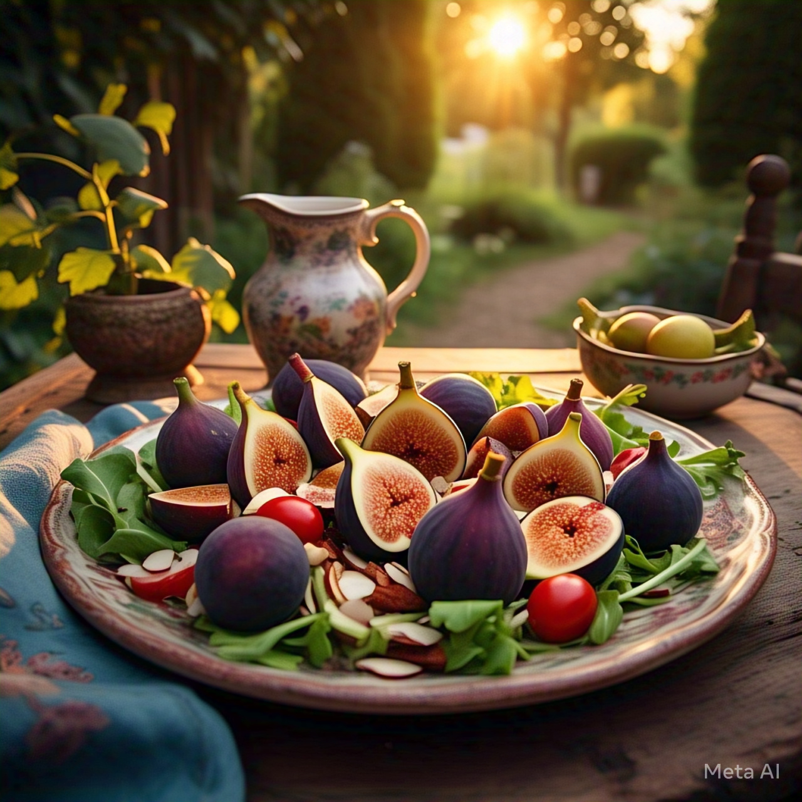

Ingredients:
- 4 fresh figs (quartered)
- 2 cups mixed greens (arugula, spinach, and kale)
- 1/4 cup crumbled goat cheese
- 1/4 cup candied pecans
- 1/4 cup raspberries
- 2 tbsp balsamic glaze
Preparation:
- In a large salad bowl, combine mixed greens, figs, raspberries, and candied pecans.
- Sprinkle crumbled goat cheese over the salad.
- Drizzle balsamic glaze on top.
- Toss gently to combine all the flavors.
- Serve your Fairy Tale Fig Salad chilled and enjoy the delightful mix!